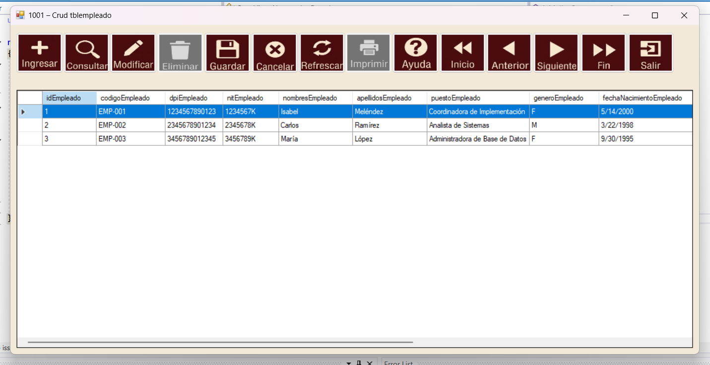
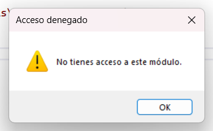
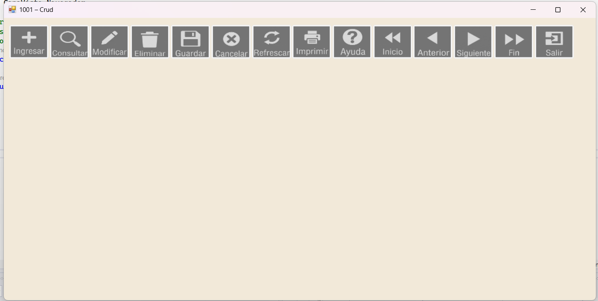

Prueba recomendada
Compilador automáticocodigo\componentes\navegador\build_navegador.batEjecutable integrado con sesión de Seguridadcodigo\componentes\seguridad\Ejecucion_Seguridad\Ejecucion_Seguridad\bin\Debug\Ejecucion_Seguridad.exeEjecutable aislado de Navegadorcodigo\componentes\navegador\Ejecucion_Navegador\Ejecucion_Navegador\bin\Debug\Ejecucion_Navegador.exe
- Confirme que el motor de base de datos esté iniciado.
- Pruebe el DSN ODBC de 64 bits.
- Ejecute
build_navegador.baty corrija cualquier error. - Inicie
Ejecucion_Seguridad.exe, acceda con un usuario válido y abra la pantalla que contiene el Navegador. - Compruebe que los botones coincidan con los permisos asignados.
- Use Consultar o Refrescar para confirmar que se puede leer la tabla.

Ejecutable de ejemplo
Formulario inicialArchivo: codigo\componentes\navegador\Ejecucion_Navegador\Ejecucion_Navegador\FrmPrincipal.cs - Clase: CapaVista_Navegador.FrmPrincipalPunto de entradaArchivo: codigo\componentes\navegador\Ejecucion_Navegador\Ejecucion_Navegador\Program.cs
Ejecucion_Navegador.sln comprueba que el control carga y que su configuración compila. Sin embargo, el Navegador exige una sesión activa de Seguridad. Al ejecutar el ejemplo directamente puede mostrar “No hay una sesión activa” y deshabilitar Ingresar, Modificar, Eliminar e Imprimir. Es comportamiento esperado, no un fallo de conexión.


Lista de comprobación
- La tabla existe y se consulta desde el mismo DSN.
- El módulo y la aplicación existen en Seguridad.
- La aplicación está asignada al perfil o usuario de prueba.
- Se probaron altas, cambios y bajas con datos no productivos.
- Se comprobó la llave primaria y, si aplica, las foráneas.
- La ayuda abre desde su botón.